At a glance一览一覽概要En brefAuf einen Blick
- Problem问题問題課題ProblèmeProblem
- Typography is the interface. The same decisions about form, spacing and hierarchy have to hold at the scale of a letter, a page and a whole site — and survive the move from print tools to the browser.字体排版本身就是界面。关于字形、间距和层级的同一套判断，要在一个字母、一页版面和一整个网站的尺度上都成立，还要经得起从印刷工具搬到浏览器的转换。字型排版本身就是介面。關於字形、間距和層級的同一套判斷，要在一個字母、一頁版面和一整個網站的尺度上都成立，還要經得起從印刷工具搬到瀏覽器的轉換。タイポグラフィはそれ自体がインターフェースです。形、間隔、階層についての同じ判断が、1 文字、1 ページ、サイト全体のどのスケールでも成り立ち、印刷用ツールからブラウザへ移しても崩れないことが求められます。La typographie est l’interface. Les mêmes choix de forme, d’espacement et de hiérarchie doivent tenir à l’échelle d’une lettre, d’une page et d’un site entier — et survivre au passage des outils d’impression au navigateur.Typografie ist die Oberfläche. Dieselben Entscheidungen über Form, Abstand und Hierarchie müssen im Maßstab eines Buchstabens, einer Seite und einer ganzen Website tragen – und den Wechsel von Druckwerkzeugen in den Browser überstehen.
- Role角色角色役割RôleRolle
- Solo work: hand lettering, paragraph and layout settings, three bilingual layouts, a research paper and every HTML/CSS build.独立完成：手写字母、段落与版式设置、三套双语版式、一篇研究论文，以及全部 HTML/CSS 实现。獨立完成：手寫字母、段落與版式設定、三套雙語版式、一篇研究論文，以及全部 HTML/CSS 實現。個人制作：手描きのレタリング、段落とレイアウトの設定、バイリンガルの 3 レイアウト、リサーチ論文、そしてすべての HTML/CSS 実装。Travail individuel : lettrage à la main, réglages de paragraphe et de mise en page, trois mises en page bilingues, un mémoire de recherche et toutes les intégrations HTML/CSS.Einzelarbeit: Handlettering, Absatz- und Layouteinstellungen, drei zweisprachige Layouts, eine Recherchearbeit und jede HTML/CSS-Umsetzung.
- Tools工具工具ツールOutilsTools
- Adobe Illustrator (brush-tool calligraphy), InDesign (7″ × 7″ layouts), HTML/CSS with Grid and Flexbox, @font-face, GSAP.Adobe Illustrator（画笔工具书法）、InDesign（7″ × 7″ 版式）、HTML/CSS（Grid 与 Flexbox）、@font-face、GSAP。Adobe Illustrator（畫筆工具書法）、InDesign（7″ × 7″ 版式）、HTML/CSS（Grid 與 Flexbox）、@font-face、GSAP。Adobe Illustrator（ブラシツールでのカリグラフィ）、InDesign（7″ × 7″ のレイアウト）、Grid と Flexbox を使った HTML/CSS、@font-face、GSAP。Adobe Illustrator (calligraphie à l’outil pinceau), InDesign (mises en page 7″ × 7″), HTML/CSS avec Grid et Flexbox, @font-face, GSAP.Adobe Illustrator (Kalligrafie mit dem Pinselwerkzeug), InDesign (Layouts in 7″ × 7″), HTML/CSS mit Grid und Flexbox, @font-face, GSAP.
- Timeline时程時程タイムラインCalendrierZeitplan
- 2025 · Stroke → Hierarchy → Voice: from the letter, to the page, to the site2025 · 笔触 → 层级 → 语气：从字母到版面，再到网站2025 · 筆觸 → 層級 → 語氣：從字母到版面，再到網站2025 · ストローク → ヒエラルキー → ボイス：文字から紙面へ、そしてサイトへ2025 · Trait → Hiérarchie → Voix : de la lettre à la page, puis au site2025 · Strich → Hierarchie → Stimme: vom Buchstaben zur Seite und weiter zur Website
- Key decisions关键决策關鍵決策主な判断Décisions clésWichtige Entscheidungen
- Bitter for on-screen body text; hierarchy built from position and space before weight or colour; web layouts rebuilt on a real grid instead of copied from print.屏幕正文选用 Bitter；先用位置和留白建立层级，再考虑字重和颜色；网页版式在真正的网格上重建，而不是照搬印刷稿。螢幕正文選用 Bitter；先用位置和留白建立層級，再考慮字重和顏色；網頁版式在真正的網格上重建，而不是照搬印刷稿。画面の本文には Bitter。階層はウェイトや色より先に、位置と余白で組む。ウェブのレイアウトは印刷物をなぞらず、本物のグリッドの上で組み直す。Bitter pour le texte courant à l’écran ; une hiérarchie construite par la position et l’espace avant la graisse ou la couleur ; des mises en page web reconstruites sur une vraie grille plutôt que copiées de l’imprimé.Bitter für Fließtext am Bildschirm; Hierarchie zuerst über Position und Raum, erst dann über Strichstärke oder Farbe; Web-Layouts auf einem echten Raster neu gebaut statt vom Druck kopiert.
- Outcome成果成果成果RésultatErgebnis
- Three live studies with their full process: four worksheet rounds, four paragraph trials, twelve HTML layouts and six website variants.三个在线练习及完整过程：四轮字母练习、四次段落试排、十二个 HTML 版式和六个网站变体。三個線上練習及完整過程：四輪字母練習、四次段落試排、十二個 HTML 版式和六個網站變體。公開中の 3 つのスタディと、その全プロセス：ワークシート 4 回、段落の試し組み 4 回、HTML レイアウト 12 種、ウェブサイトのバリエーション 6 種。Trois études en ligne avec tout leur processus : quatre séries de planches, quatre essais de paragraphe, douze mises en page HTML et six variantes de site.Drei Live-Studien mit dem gesamten Prozess: vier Runden Arbeitsblätter, vier Absatzproben, zwölf HTML-Layouts und sechs Website-Varianten.
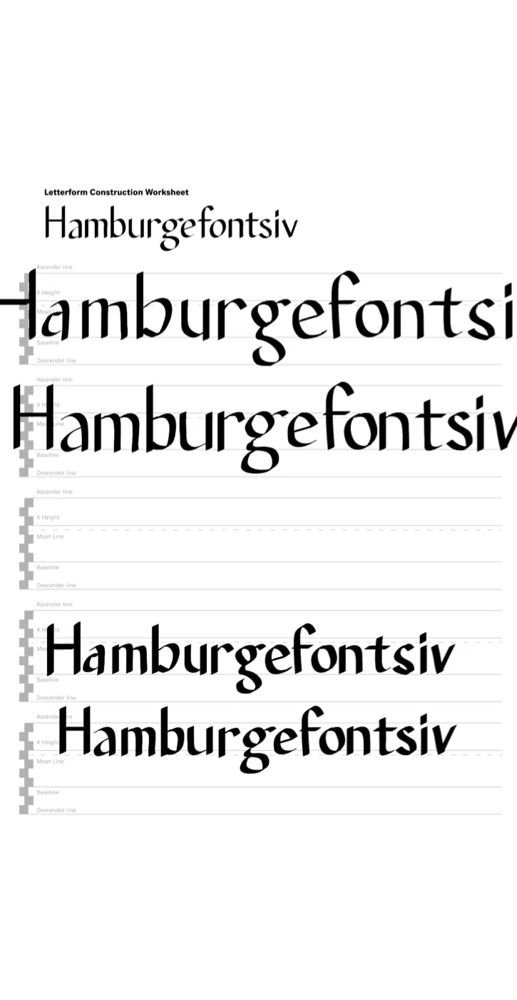
Context背景背景背景ContexteKontext
Typography is where interaction design starts: before a button or a layout, there is a letter and the space around it. These three exercises work outward from that letter. Each was made with print tools first and then rebuilt in code, so every decision had to survive the move from Illustrator or InDesign to the browser.
交互设计从字体开始：在按钮和布局之前，先有一个字母和它周围的留白。这三个练习从这个字母出发，一步步向外扩展。每个练习都先用印刷工具完成，再用代码重建，所以每一个判断都必须经得起从 Illustrator 或 InDesign 搬到浏览器的考验。
互動設計從字型開始：在按鈕和佈局之前，先有一個字母和它周圍的留白。這三個練習從這個字母出發，一步步向外擴充。每個練習都先用印刷工具完成，再用程式碼重建，所以每一個判斷都必須經得起從 Illustrator 或 InDesign 搬到瀏覽器的考驗。
インタラクションデザインはタイポグラフィから始まります。ボタンやレイアウトの前に、1 つの文字とそのまわりの余白があるからです。この 3 つの練習は、その文字から外へと広がっていきます。どれもまず印刷用のツールで作り、それからコードで組み直したので、あらゆる判断が Illustrator や InDesign からブラウザへの移行に耐えなければなりませんでした。
Le design d’interaction commence par la typographie : avant un bouton ou une mise en page, il y a une lettre et l’espace qui l’entoure. Ces trois exercices partent de cette lettre et s’élargissent. Chacun a d’abord été réalisé avec des outils d’impression, puis reconstruit en code : chaque décision devait donc survivre au passage d’Illustrator ou d’InDesign au navigateur.
Interaction Design beginnt bei der Typografie: Vor jedem Button und jedem Layout steht ein Buchstabe und der Raum um ihn herum. Diese drei Übungen arbeiten sich von diesem Buchstaben nach außen vor. Jede entstand zuerst mit Druckwerkzeugen und wurde dann im Code neu gebaut – jede Entscheidung musste also den Weg von Illustrator oder InDesign in den Browser überstehen.
- Stroke — hand-drawn letterforms, a paragraph set for the screen, and type classification
- Hierarchy — one bilingual chocolate wrapper reordered three ways, in InDesign and then in CSS Grid
- Voice — research on type designer Rod McDonald, interpreted as a website
- Rules — Stroke: six candidate typefaces; Hierarchy: a 7″ × 7″ square and three layouts with fixed rules; Voice: at least one font embedded with @font-face
- 笔触 — 手绘字母、为屏幕设置的一段正文，以及字体分类
- 层级 — 一张双语巧克力包装纸，用三种方式重新排序，先在 InDesign 里，再用 CSS Grid
- 语气 — 研究字体设计师 Rod McDonald，并把研究诠释成一个网站
- 规则 — 笔触：在六款候选字体中选择；层级：7″ × 7″ 方形画面，三个版式各有固定规则；语气：至少用 @font-face 嵌入一款字体
- 筆觸 — 手繪字母、為螢幕設定的一段正文，以及字型分類
- 層級 — 一張雙語巧克力包裝紙，用三種方式重新排序，先在 InDesign 裡，再用 CSS Grid
- 語氣 — 研究字型設計師 Rod McDonald，並把研究詮釋成一個網站
- 規則 — 筆觸：在六款候選字型中選擇；層級：7″ × 7″ 方形畫面，三個版式各有固定規則；語氣：至少用 @font-face 嵌入一款字型
- ストローク — 手描きの字形、画面向けに組んだ段落、書体の分類
- ヒエラルキー — バイリンガルのチョコレート包装 1 枚を 3 通りに組み直す。まず InDesign、次に CSS Grid で
- ボイス — 書体デザイナー Rod McDonald の研究を、ウェブサイトとして解釈する
- ルール — ストローク：候補の 6 書体から選ぶ。ヒエラルキー：7″ × 7″ の正方形に、ルールの決まった 3 レイアウト。ボイス：@font-face で少なくとも 1 書体を埋め込む
- Trait — des lettres dessinées à la main, un paragraphe composé pour l’écran et une classification typographique
- Hiérarchie — un emballage chocolaté bilingue réordonné de trois façons, dans InDesign puis en CSS Grid
- Voix — une recherche sur le dessinateur de caractères Rod McDonald, interprétée en site web
- Règles — Trait : six polices candidates ; Hiérarchie : un carré de 7″ × 7″ et trois mises en page aux règles fixes ; Voix : au moins une police intégrée avec @font-face
- Strich — handgezeichnete Buchstaben, ein Absatz für den Bildschirm und Schriftklassifikation
- Hierarchie — eine zweisprachige Schokoladenverpackung, auf drei Arten neu geordnet, in InDesign und dann in CSS Grid
- Stimme — eine Recherche zum Schriftgestalter Rod McDonald, als Website interpretiert
- Regeln — Strich: sechs Schriften zur Auswahl; Hierarchie: ein Quadrat von 7″ × 7″ und drei Layouts mit festen Regeln; Stimme: mindestens eine per @font-face eingebundene Schrift
The design problem设计问题設計問題デザインの課題Le problème de designDas Designproblem
How do you build a clear hierarchy with as little as possible — and keep it when the medium changes? Three tensions ran through all three exercises:
怎样用尽可能少的手段建立清晰的层级，并在媒介改变时保住它？三个练习都贯穿着三组张力：
怎樣用儘可能少的手段建立清晰的層級，並在媒介改變時保住它？三個練習都貫穿著三組張力：
できるだけ少ない手段で明快な階層をつくり、媒体が変わってもそれを保つにはどうするか。3 つの練習を通して、3 つの緊張関係がありました。
Comment construire une hiérarchie claire avec le moins de moyens possible — et la conserver quand le support change ? Trois tensions traversent les trois exercices :
Wie baut man mit so wenig Mitteln wie möglich eine klare Hierarchie – und hält sie, wenn sich das Medium ändert? Drei Spannungen zogen sich durch alle drei Übungen:
- Hand vs. system — letters drawn by hand still have to share a baseline, x-height, cap height and stroke angle, or the word falls apart.
- Constraint vs. hierarchy — Layout 1 allows one typeface, one size, 100% black. Primary, secondary and tertiary information must separate through position and space alone.
- Print vs. screen — every Illustrator or InDesign piece had to be rebuilt in HTML/CSS without losing its spacing, and the web versions had to reflow rather than freeze.
- 手写与系统 — 手绘的字母仍然必须共用基线、x 字高、大写字高和笔画角度，否则整个单词就会散掉。
- 限制与层级 — 版式 1 只允许一款字体、一个字号、100% 黑色。主要、次要和第三层信息只能靠位置和留白区分开。
- 印刷与屏幕 — 每件 Illustrator 或 InDesign 作品都要用 HTML/CSS 重建，且不能丢掉原有的间距；网页版还必须能自适应重排，而不是一张定格的图。
- 手寫與系統 — 手繪的字母仍然必須共用基線、x 字高、大寫字高和筆畫角度，否則整個單詞就會散掉。
- 限制與層級 — 版式 1 只允許一款字型、一個字級、100% 黑色。主要、次要和第三層資訊只能靠位置和留白區分開。
- 印刷與螢幕 — 每件 Illustrator 或 InDesign 作品都要用 HTML/CSS 重建，且不能丟掉原有的間距；網頁版還必須能自適應重排，而不是一張定格的圖。
- 手と体系 — 手で描いた文字でも、ベースライン、x ハイト、キャップハイト、ストロークの角度をそろえなければ、単語としてまとまりません。
- 制約と階層 — レイアウト 1 で使えるのは 1 書体、1 サイズ、黒 100% のみ。一次・二次・三次の情報を、位置と余白だけで分けなければなりません。
- 印刷と画面 — Illustrator や InDesign の作品はすべて、間隔を失わずに HTML/CSS で組み直す必要があり、ウェブ版は固まった絵ではなく、リフローできなければなりません。
- La main contre le système — des lettres dessinées à la main doivent quand même partager ligne de base, hauteur d’x, hauteur de capitale et angle de trait, sinon le mot se désagrège.
- Contrainte contre hiérarchie — la mise en page 1 n’autorise qu’une police, un corps, du noir à 100 %. Les informations principales, secondaires et tertiaires doivent se distinguer par la seule position et l’espace.
- Imprimé contre écran — chaque pièce Illustrator ou InDesign devait être reconstruite en HTML/CSS sans perdre ses espacements, et les versions web devaient se recomposer plutôt que se figer.
- Hand gegen System — auch von Hand gezeichnete Buchstaben müssen Grundlinie, x-Höhe, Versalhöhe und Strichwinkel teilen, sonst zerfällt das Wort.
- Vorgabe gegen Hierarchie — Layout 1 erlaubt eine Schrift, eine Größe, 100 % Schwarz. Primäre, sekundäre und tertiäre Informationen müssen sich allein über Position und Raum trennen.
- Druck gegen Bildschirm — jedes Stück aus Illustrator oder InDesign musste in HTML/CSS neu gebaut werden, ohne seine Abstände zu verlieren, und die Web-Fassungen sollten umbrechen statt erstarren.
Goal目标目標目的ObjectifZiel
Construct letters by hand, set a long block of text for on-screen reading, and classify four letters by their anatomy.
手工构造字母，为屏幕阅读设置一大段长文，并根据结构特征为四个字母分类。
手工構造字母，為螢幕閱讀設定一大段長文，並根據結構特徵為四個字母分類。
手で文字を組み立て、画面で読む長文を組み、4 つの文字を形の特徴から分類する。
Construire des lettres à la main, composer un long texte pour la lecture à l’écran et classer quatre lettres d’après leur anatomie.
Buchstaben von Hand konstruieren, einen langen Text für das Lesen am Bildschirm setzen und vier Buchstaben nach ihrer Anatomie klassifizieren.
Approach方法方法アプローチDémarcheVorgehen
I drew the letterform worksheets with Illustrator’s brush tool set up like a broad-nib pen — H, a, m, b, u, r, g, e, f, o, n, t, s, i, v — repeating each letter until the strokes held the same angle and weight. The best forms were set as the word “Hamburgefontsiv”, with a rollover that labels the anatomy: ascender, x-height, bowl, ear, terminal and the rest.
我用 Illustrator 的画笔工具模拟宽头笔完成字母练习表 —— H、a、m、b、u、r、g、e、f、o、n、t、s、i、v —— 每个字母反复书写，直到笔画的角度和粗细保持一致。最好的字形被排成单词“Hamburgefontsiv”，并加上鼠标悬停效果，标出各部位名称：上伸部、x 字高、字碗、字耳、收笔等。
我用 Illustrator 的畫筆工具模擬寬頭筆完成字母練習表 —— H、a、m、b、u、r、g、e、f、o、n、t、s、i、v —— 每個字母反覆書寫，直到筆畫的角度和粗細保持一致。最好的字形被排成單詞“Hamburgefontsiv”，並加上滑鼠懸停效果，標出各部位名稱：上伸部、x 字高、字碗、字耳、收筆等。
Illustrator のブラシツールを平筆のように設定してワークシートを描きました。H、a、m、b、u、r、g、e、f、o、n、t、s、i、v を、ストロークの角度と太さがそろうまで繰り返し、いちばん良い形で「Hamburgefontsiv」という単語を組み、アセンダー、x ハイト、ボウル、イヤー、ターミナルなどの部位名を表示するロールオーバーを付けました。
J’ai tracé les planches de construction avec l’outil pinceau d’Illustrator réglé comme une plume à bec large — H, a, m, b, u, r, g, e, f, o, n, t, s, i, v —, en répétant chaque lettre jusqu’à ce que les traits gardent le même angle et la même graisse. Les meilleures formes composent le mot « Hamburgefontsiv », avec un survol qui nomme l’anatomie : ascendante, hauteur d’x, panse, oreille, terminaison, etc.
Die Arbeitsblätter habe ich mit dem Pinselwerkzeug von Illustrator gezeichnet, eingestellt wie eine Breitfeder – H, a, m, b, u, r, g, e, f, o, n, t, s, i, v –, und jeden Buchstaben so oft wiederholt, bis die Striche denselben Winkel und dieselbe Stärke hielten. Aus den besten Formen entstand das Wort „Hamburgefontsiv“, mit einem Rollover, der die Anatomie beschriftet: Oberlänge, x-Höhe, Bauch, Ohr, Endstrich und so weiter.
Key decisions关键决策關鍵決策主な判断Décisions clésWichtige Entscheidungen
- Bitter for the paragraph. Of the six faces allowed, Abril Fatface and Kelly Slab are display faces and Georgia was tuned for an older generation of screens; Bitter is a slab serif drawn for screens, with sturdy serifs that hold up at body size.
- Settings chosen by reading, not by default. 1.18rem size, 1.66rem leading (about 1.4×), +0.01rem tracking, a 51rem measure and a 2.05rem first-line indent — tuned for a long news story read on a laptop.
- Classification from evidence. g, a, o and e were identified as transitional serif, slab serif, geometric sans and old-style serif, each with the features that decided it: axis, stroke contrast and serif shape.
- 正文用 Bitter。在允许的六款字体里，Abril Fatface 和 Kelly Slab 是展示字体，Georgia 是为上一代屏幕调校的；Bitter 是专为屏幕绘制的粗衬线体，结实的衬线在正文字号下也站得住。
- 参数靠阅读来定，而不是用默认值。字号 1.18rem、行距 1.66rem（约 1.4 倍）、字距 +0.01rem、行长 51rem、首行缩进 2.05rem —— 针对在笔记本电脑上读一篇长篇新闻而调校。
- 分类要有依据。g、a、o、e 分别被判定为过渡衬线体、粗衬线体、几何无衬线体和旧式衬线体，每个都写明了决定性特征：轴线、笔画对比和衬线形状。
- 正文用 Bitter。在允許的六款字型裡，Abril Fatface 和 Kelly Slab 是展示字型，Georgia 是為上一代螢幕調校的；Bitter 是專為螢幕繪製的粗襯線體，結實的襯線在正文字級下也站得住。
- 引數靠閱讀來定，而不是用預設值。字級 1.18rem、行距 1.66rem（約 1.4 倍）、字距 +0.01rem、行長 51rem、首行縮排 2.05rem —— 針對在筆電上讀一篇長篇新聞而調校。
- 分類要有依據。g、a、o、e 分別被判定為過渡襯線體、粗襯線體、幾何無襯線體和舊式襯線體，每個都寫明瞭決定性特徵：軸線、筆畫對比和襯線形狀。
- 段落には Bitter。使える 6 書体のうち、Abril Fatface と Kelly Slab はディスプレイ書体で、Georgia はひと世代前の画面向けに調整された書体です。Bitter は画面用に描かれたスラブセリフで、しっかりしたセリフが本文サイズでも崩れません。
- 数値は既定値ではなく、読んで決める。サイズ 1.18rem、行送り 1.66rem（約 1.4 倍）、字間 +0.01rem、行長 51rem、字下げ 2.05rem。ノートパソコンで長いニュース記事を読む前提で調整しました。
- 分類は根拠から。g、a、o、e をそれぞれトランジショナル・セリフ、スラブセリフ、ジオメトリック・サンセリフ、オールドスタイル・セリフと判定し、決め手となった特徴（軸、ストロークのコントラスト、セリフの形）を添えました。
- Bitter pour le paragraphe. Parmi les six polices permises, Abril Fatface et Kelly Slab sont des caractères de titrage, et Georgia a été réglé pour une génération d’écrans plus ancienne ; Bitter est une égyptienne dessinée pour l’écran, aux empattements robustes qui tiennent en corps de texte.
- Des réglages choisis en lisant, pas par défaut. Corps 1,18rem, interlignage 1,66rem (environ 1,4×), approche +0,01rem, justification de 51rem et alinéa de 2,05rem — ajustés pour un long article lu sur un ordinateur portable.
- Une classification argumentée. g, a, o et e ont été identifiés comme réale, égyptienne, linéale géométrique et humane, chacun avec les traits décisifs : axe, contraste des pleins et déliés, forme des empattements.
- Bitter für den Absatz. Von den sechs erlaubten Schriften sind Abril Fatface und Kelly Slab Display-Schriften, und Georgia wurde für eine ältere Bildschirmgeneration abgestimmt; Bitter ist eine für Bildschirme gezeichnete Egyptienne, deren kräftige Serifen auch in Lesegröße tragen.
- Werte durch Lesen gefunden, nicht per Voreinstellung. 1,18rem Schriftgröße, 1,66rem Zeilenabstand (etwa 1,4-fach), +0,01rem Laufweite, 51rem Zeilenlänge und 2,05rem Erstzeileneinzug – abgestimmt auf eine lange Nachrichtenreportage, gelesen am Laptop.
- Klassifikation aus Belegen. g, a, o und e wurden als Übergangsantiqua, Egyptienne, geometrische Grotesk und Renaissance-Antiqua bestimmt, jeweils mit den entscheidenden Merkmalen: Achse, Strichkontrast und Form der Serifen.
Dead ends & cut features死胡同与砍掉的功能死胡同與砍掉的功能行き止まりと削った機能Impasses et fonctions abandonnéesSackgassen & gestrichene Ideen
- Ubuntu at 1.05rem with −0.01rem tracking: legible, but cramped, and with no set measure the lines ran far too long.
- Abril Fatface: its hairlines and heavy verticals sparkle in a headline but vibrate across a full paragraph.
- Ubuntu，1.05rem，字距 −0.01rem：看得清，但太挤；而且没设行长，每行都拉得太长。
- Abril Fatface：极细的发丝线和粗重的竖笔在标题里很出彩，放进整段正文就会晃眼。
- Ubuntu，1.05rem，字距 −0.01rem：看得清，但太擠；而且沒設行長，每行都拉得太長。
- Abril Fatface：極細的髮絲線和粗重的豎筆在標題裡很出彩，放進整段正文就會晃眼。
- Ubuntu、1.05rem、字間 −0.01rem：読めるものの窮屈で、行長を決めていなかったため 1 行が長すぎました。
- Abril Fatface：極細のヘアラインと太い縦画は見出しでは映えますが、段落全体ではちらつきます。
- Ubuntu à 1,05rem avec une approche de −0,01rem : lisible mais serré, et sans justification fixée, les lignes étaient bien trop longues.
- Abril Fatface : ses déliés très fins et ses fûts épais brillent dans un titre mais vibrent sur tout un paragraphe.
- Ubuntu in 1,05rem mit −0,01rem Laufweite: lesbar, aber gedrängt, und ohne festgelegte Zeilenlänge liefen die Zeilen viel zu lang.
- Abril Fatface: Ihre Haarstriche und schweren Vertikalen glänzen in einer Überschrift, flimmern aber über einen ganzen Absatz.
Outcome成果成果成果RésultatErgebnis
A live page with the lettered word, its anatomy rollover, the final paragraph setting and the four classifications with their rationale.
一个在线页面：手写单词、结构标注的悬停效果、最终的段落设置，以及四个字母的分类和理由。
一個線上頁面：手寫單詞、結構標註的懸停效果、最終的段落設定，以及四個字母的分類和理由。
描いた単語、部位名のロールオーバー、最終的な段落設定、4 文字の分類とその根拠をまとめた公開ページ。
Une page en ligne avec le mot lettré, son survol anatomique, la composition finale du paragraphe et les quatre classifications argumentées.
Eine Live-Seite mit dem geschriebenen Wort, seinem Anatomie-Rollover, der finalen Absatzeinstellung und den vier Klassifikationen samt Begründung.
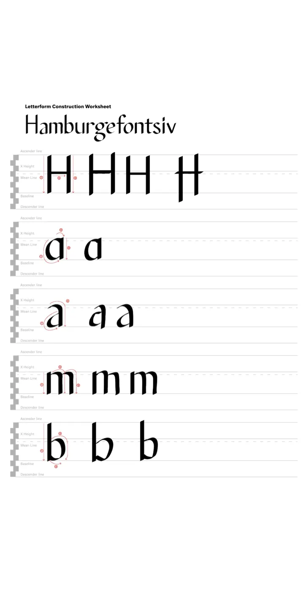
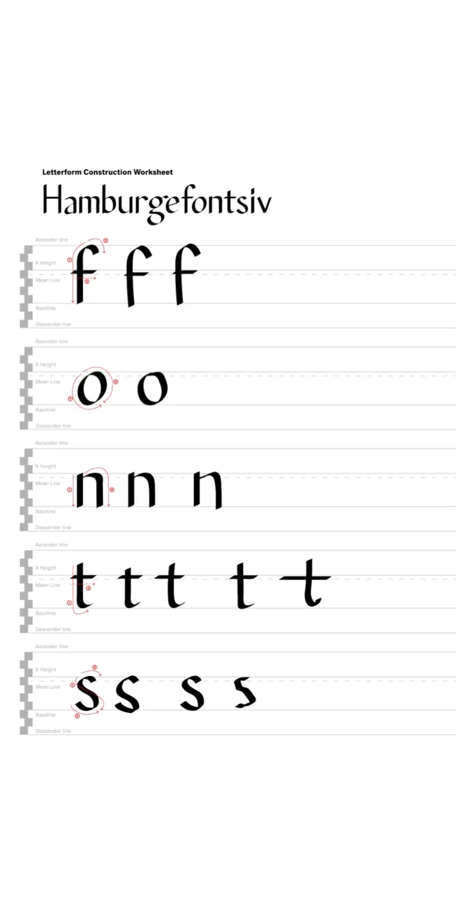
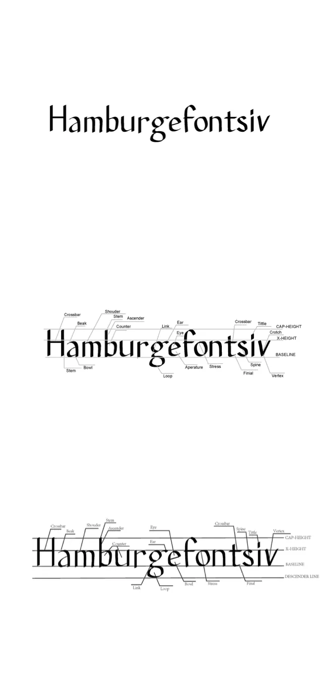
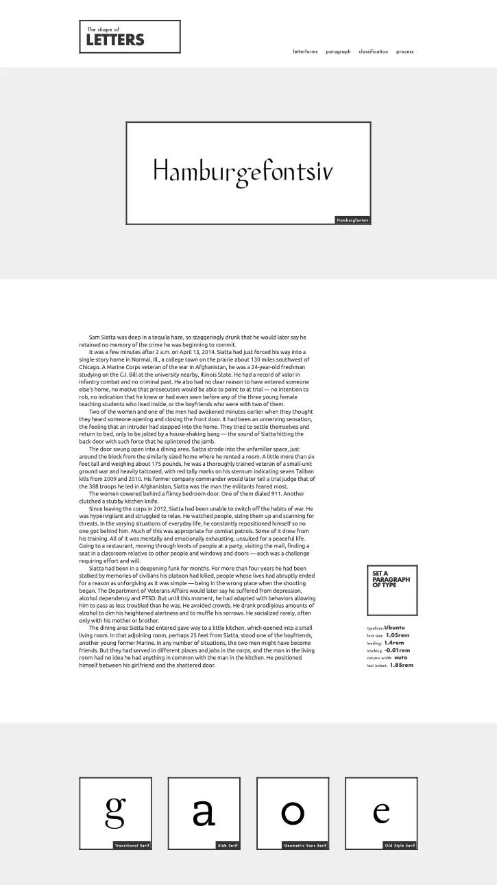
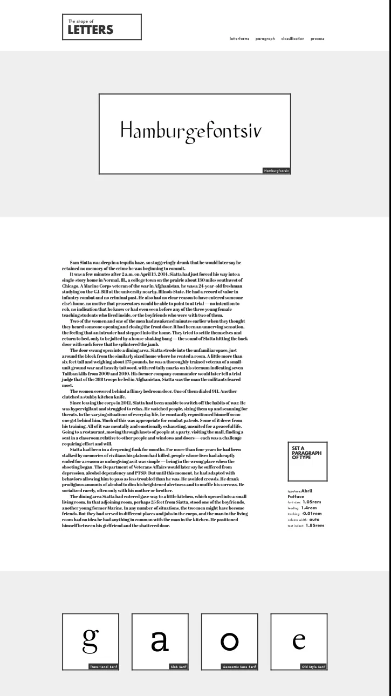
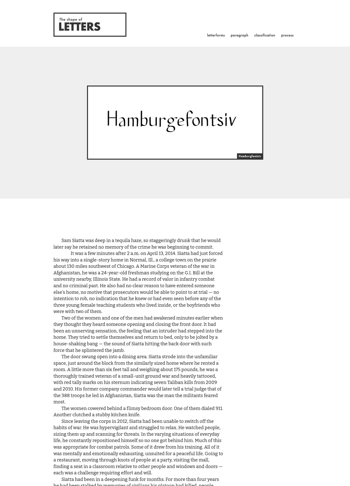
Goal目标目標目的ObjectifZiel
Take every word on a bilingual chocolate-bar wrapper and build three hierarchies from it — first in InDesign, then in CSS.
把一张双语巧克力包装纸上的每一个字拿出来，建立三种层级 —— 先在 InDesign 里，再用 CSS。
把一張雙語巧克力包裝紙上的每一個字拿出來，建立三種層級 —— 先在 InDesign 裡，再用 CSS。
バイリンガルのチョコレートバーの包装にある言葉をすべて取り出し、3 通りの階層を組む。まず InDesign で、次に CSS で。
Prendre chaque mot de l’emballage bilingue d’une barre chocolatée et en tirer trois hiérarchies — d’abord dans InDesign, puis en CSS.
Jedes Wort auf der zweisprachigen Verpackung eines Schokoriegels nehmen und daraus drei Hierarchien bauen – erst in InDesign, dann in CSS.
Approach方法方法アプローチDémarcheVorgehen
I chose a Reese peanut-butter-cups wrapper, transcribed all of its English and French text, and analysed how the package ranks it. The brand name, product line and product photo are primary; the French name, the flavour line and the net weight are secondary; ingredients, nutrition facts, importer and contact details are tertiary. That ranking became the content plan for three 7″ × 7″ layouts, each with a different set of freedoms.
我选了一张 Reese 花生酱杯的包装纸，把上面所有英文和法文抄录下来，并分析包装如何给信息排序：品牌名、产品名和产品图是第一层；法文名、口味描述和净含量是第二层；配料、营养成分、进口商和联系方式是第三层。这个排序成了三个 7″ × 7″ 版式的内容规划，每个版式允许的手段各不相同。
我選了一張 Reese 花生醬杯的包裝紙，把上面所有英文和法文抄錄下來，並分析包裝如何給資訊排序：品牌名、產品名和產品圖是第一層；法文名、口味描述和淨含量是第二層；配料、營養成分、進口商和聯絡方式是第三層。這個排序成了三個 7″ × 7″ 版式的內容規劃，每個版式允許的手段各不相同。
Reese のピーナッツバターカップの包装を選び、英語とフランス語の文字をすべて書き起こして、パッケージが情報をどう序列づけているかを分析しました。ブランド名、商品名、商品写真が一次。フランス語の商品名、味の説明、内容量が二次。原材料、栄養成分表示、輸入者、問い合わせ先が三次です。この序列が、使える手段の異なる 7″ × 7″ の 3 レイアウトのコンテンツ設計になりました。
J’ai choisi l’emballage des coupes au beurre d’arachide Reese, transcrit tout son texte anglais et français, et analysé la façon dont l’emballage le hiérarchise. La marque, le nom du produit et la photo sont primaires ; le nom français, la ligne de saveur et le poids net sont secondaires ; ingrédients, valeur nutritive, importateur et coordonnées sont tertiaires. Ce classement est devenu le plan de contenu de trois mises en page de 7″ × 7″, chacune avec ses propres libertés.
Ich habe die Verpackung der Reese Peanut Butter Cups gewählt, ihren gesamten englischen und französischen Text abgeschrieben und analysiert, wie die Packung ihn gewichtet. Markenname, Produktbezeichnung und Produktfoto sind primär; der französische Name, die Geschmacksangabe und das Nettogewicht sekundär; Zutaten, Nährwerte, Importeur und Kontaktdaten tertiär. Diese Rangfolge wurde zum Inhaltsplan für drei Layouts in 7″ × 7″, jedes mit anderen Freiheiten.
Key decisions关键决策關鍵決策主な判断Décisions clésWichtige Entscheidungen
- Layout 1 — one face, one size, 100% black. Helvetica only, so hierarchy came from grouping, alignment and white space: brand and weight on one line, the English and French product names paired in two columns, the nutrition table on its own column.
- Layout 2 — weight and stance. Same size, now with bold and italic. Bold carries the panel headings and key values; italic marks the product descriptions and the small print.
- Layout 3 — full contrast. Size, typeface and colour unlocked: a large orange “Reese” wordmark anchors the square, a serif sets the nutrition panel, a monospace face carries calories and weight, and colour separates the information groups.
- Rebuild, don’t screenshot. Each final was recreated with CSS Grid and Flexbox from the same text, so the web versions reflow instead of being pictures of the print.
- 版式 1 —— 单一字体、单一字号、100% 黑。只用 Helvetica，所以层级只能来自分组、对齐和留白：品牌和净含量放在同一行，英法产品名分两栏并列，营养成分表独占一栏。
- 版式 2 —— 字重与姿态。字号不变，加入粗体和斜体。粗体承担栏目标题和关键数值，斜体标出产品描述和小字。
- 版式 3 —— 完全对比。字号、字体和颜色全部放开：一个大号橙色“Reese”字标压住整个方形画面，衬线体排营养成分表，等宽字体承载热量和重量，颜色把各组信息分开。
- 重建，而不是截图。每个定稿都用 CSS Grid 和 Flexbox 以同样的文字重新搭建，所以网页版能自适应重排，而不是印刷稿的图片。
- 版式 1 —— 單一字型、單一字級、100% 黑。只用 Helvetica，所以層級只能來自分組、對齊和留白：品牌和淨含量放在同一行，英法產品名分兩欄並列，營養成分表獨佔一欄。
- 版式 2 —— 字重與姿態。字級不變，加入粗體和斜體。粗體承擔欄目標題和關鍵數值，斜體標出產品描述和小字。
- 版式 3 —— 完全對比。字級、字型和顏色全部放開：一個大號橙色“Reese”字標壓住整個方形畫面，襯線體排營養成分表，等寬字型承載熱量和重量，顏色把各組資訊分開。
- 重建，而不是截圖。每個定稿都用 CSS Grid 和 Flexbox 以同樣的文字重新搭建，所以網頁版能自適應重排，而不是印刷稿的圖片。
- レイアウト 1 —— 1 書体・1 サイズ・黒 100%。Helvetica だけなので、階層はグループ化、揃え、余白から生まれます。ブランド名と内容量を 1 行に、英語とフランス語の商品名を 2 段で並べ、栄養成分表は独立した段に置きました。
- レイアウト 2 —— ウェイトとスタンス。サイズは同じまま、太字とイタリックを加えました。太字は見出しと主要な数値を、イタリックは商品説明と細則を担います。
- レイアウト 3 —— フルコントラスト。サイズ、書体、色をすべて解禁。大きなオレンジの「Reese」のロゴタイプが正方形を支え、栄養成分表はセリフ体、カロリーと重量は等幅書体で、色が情報のグループを分けます。
- スクリーンショットではなく、組み直す。どの最終版も同じテキストから CSS Grid と Flexbox で作り直したので、ウェブ版は印刷物の画像ではなく、リフローします。
- Mise en page 1 — une police, un corps, noir à 100 %. Helvetica seule : la hiérarchie vient du regroupement, de l’alignement et du blanc — marque et poids sur une ligne, noms anglais et français côte à côte sur deux colonnes, tableau nutritionnel dans sa propre colonne.
- Mise en page 2 — graisse et inclinaison. Même corps, avec gras et italique. Le gras porte les titres de bloc et les valeurs clés ; l’italique signale les descriptions et les mentions en petit.
- Mise en page 3 — contraste complet. Corps, police et couleur libérés : un grand logotype « Reese » orange ancre le carré, un caractère à empattements compose le tableau nutritionnel, une police à chasse fixe porte calories et poids, et la couleur sépare les groupes d’information.
- Reconstruire, pas faire une capture. Chaque version finale a été recréée en CSS Grid et Flexbox à partir du même texte : les versions web se recomposent au lieu d’être des images de l’imprimé.
- Layout 1 — eine Schrift, eine Größe, 100 % Schwarz. Nur Helvetica, also entstand die Hierarchie aus Gruppierung, Ausrichtung und Weißraum: Marke und Gewicht in einer Zeile, englische und französische Produktnamen paarweise in zwei Spalten, die Nährwerttabelle in einer eigenen Spalte.
- Layout 2 — Strichstärke und Schriftlage. Gleiche Größe, jetzt mit Fett und Kursiv. Fett trägt die Überschriften der Blöcke und die wichtigsten Werte; Kursiv markiert die Produktbeschreibungen und das Kleingedruckte.
- Layout 3 — voller Kontrast. Größe, Schrift und Farbe freigegeben: Eine große orange Wortmarke „Reese“ verankert das Quadrat, eine Serifenschrift setzt die Nährwerttabelle, eine Monospace-Schrift trägt Kalorien und Gewicht, und Farbe trennt die Informationsgruppen.
- Neu bauen statt Screenshot. Jede Endfassung wurde aus demselben Text mit CSS Grid und Flexbox nachgebaut, sodass die Web-Fassungen umbrechen, statt Bilder des Drucks zu sein.
Dead ends & cut features死胡同与砍掉的功能死胡同與砍掉的功能行き止まりと削った機能Impasses et fonctions abandonnéesSackgassen & gestrichene Ideen
- The first round of HTML layouts (Ver1) copied the InDesign positions too literally, and at other widths the columns collided. Ver2 rebuilt each one on a grid with defined tracks — twelve HTML layouts in total.
- 第一轮 HTML 版式（Ver1）照搬 InDesign 的位置太死板，换个宽度各栏就撞在一起。Ver2 把每个版式都重建在定义好轨道的网格上 —— 前后一共十二个 HTML 版式。
- 第一輪 HTML 版式（Ver1）照搬 InDesign 的位置太死板，換個寬度各欄就撞在一起。Ver2 把每個版式都重建在定義好軌道的網格上 —— 前後一共十二個 HTML 版式。
- 1 回目の HTML レイアウト（Ver1）は InDesign の位置をそのまま写しすぎて、幅が変わると段同士がぶつかりました。Ver2 では、トラックを定義したグリッドの上ですべて組み直しました。HTML レイアウトは合計 12 種です。
- La première série de mises en page HTML (Ver1) reprenait trop littéralement les positions d’InDesign : à d’autres largeurs, les colonnes se percutaient. La Ver2 a tout reconstruit sur une grille aux pistes définies — douze mises en page HTML au total.
- Die erste Runde HTML-Layouts (Ver1) übernahm die Positionen aus InDesign zu wörtlich; bei anderen Breiten stießen die Spalten zusammen. Ver2 baute jedes Layout auf einem Raster mit definierten Spuren neu – insgesamt zwölf HTML-Layouts.
Outcome成果成果成果RésultatErgebnis
A project hub linking the wrapper analysis, the bilingual transcription and all twelve HTML layouts, alongside the three InDesign finals.
一个项目总览页，链接到包装分析、双语抄录和全部十二个 HTML 版式，另附三个 InDesign 定稿。
一個專案總覽頁，連結到包裝分析、雙語抄錄和全部十二個 HTML 版式，另附三個 InDesign 定稿。
包装の分析、バイリンガルの書き起こし、12 種の HTML レイアウトすべてにつながるプロジェクトハブと、InDesign の最終版 3 点。
Un hub de projet reliant l’analyse de l’emballage, la transcription bilingue et les douze mises en page HTML, avec les trois versions finales InDesign.
Ein Projekt-Hub, der Verpackungsanalyse, zweisprachige Abschrift und alle zwölf HTML-Layouts verbindet, dazu die drei Endfassungen aus InDesign.
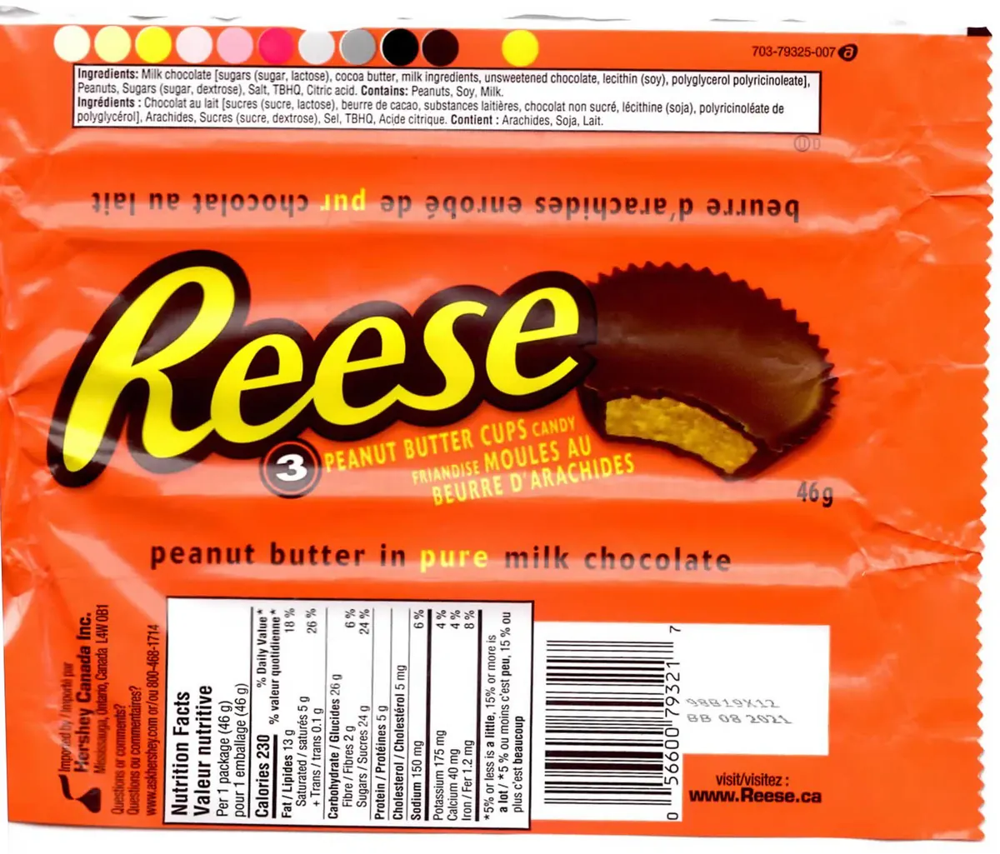
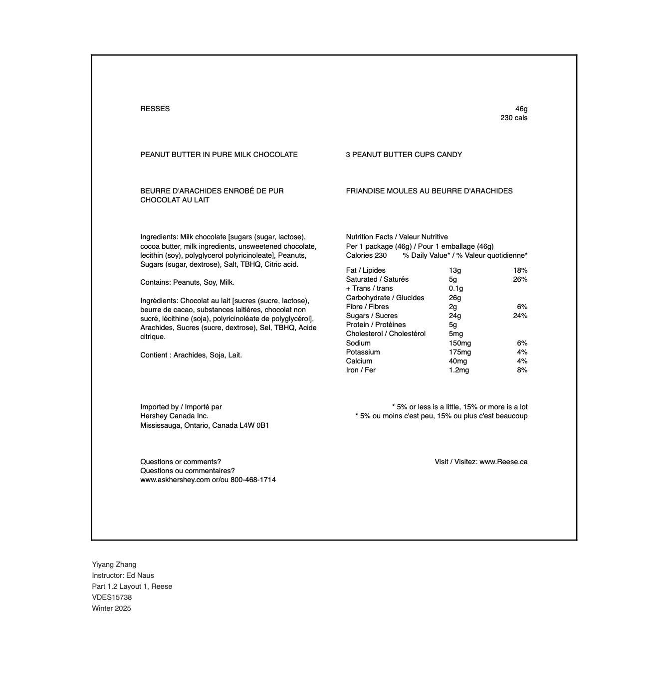
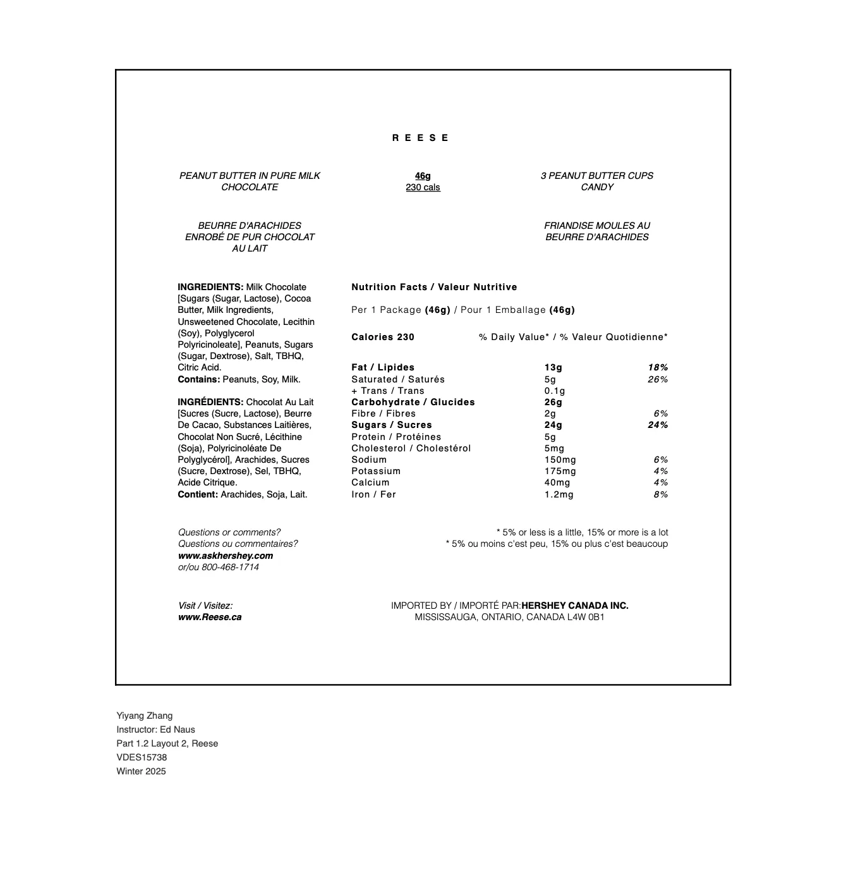
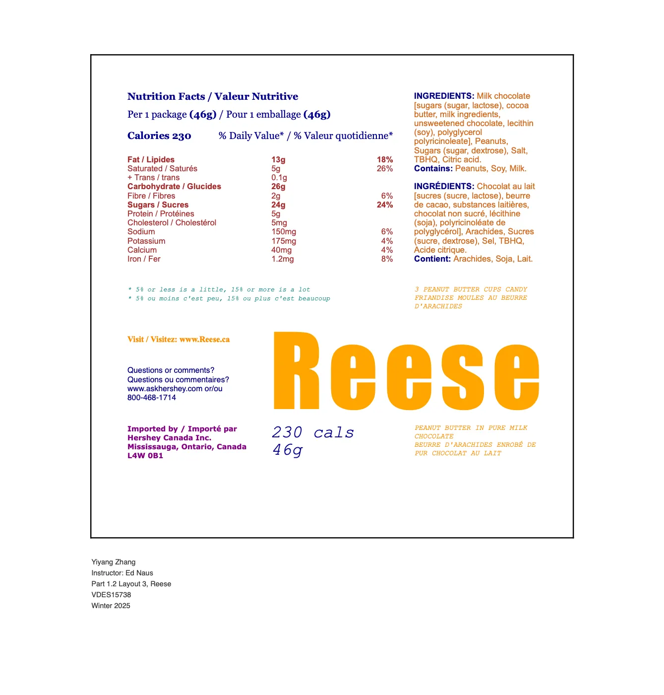
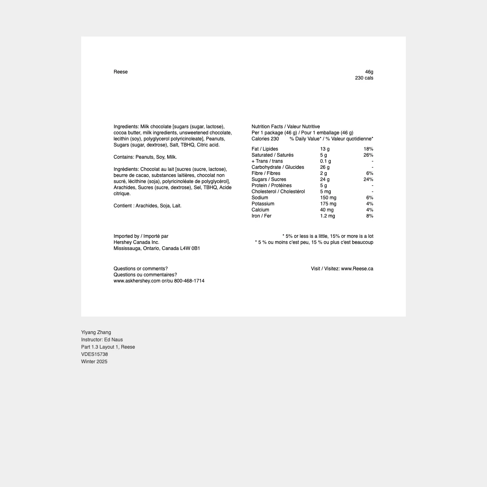
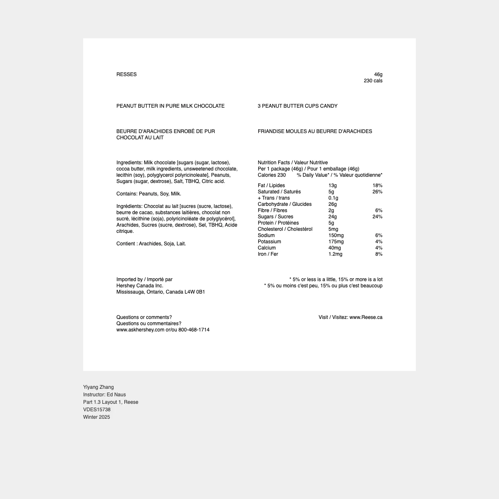
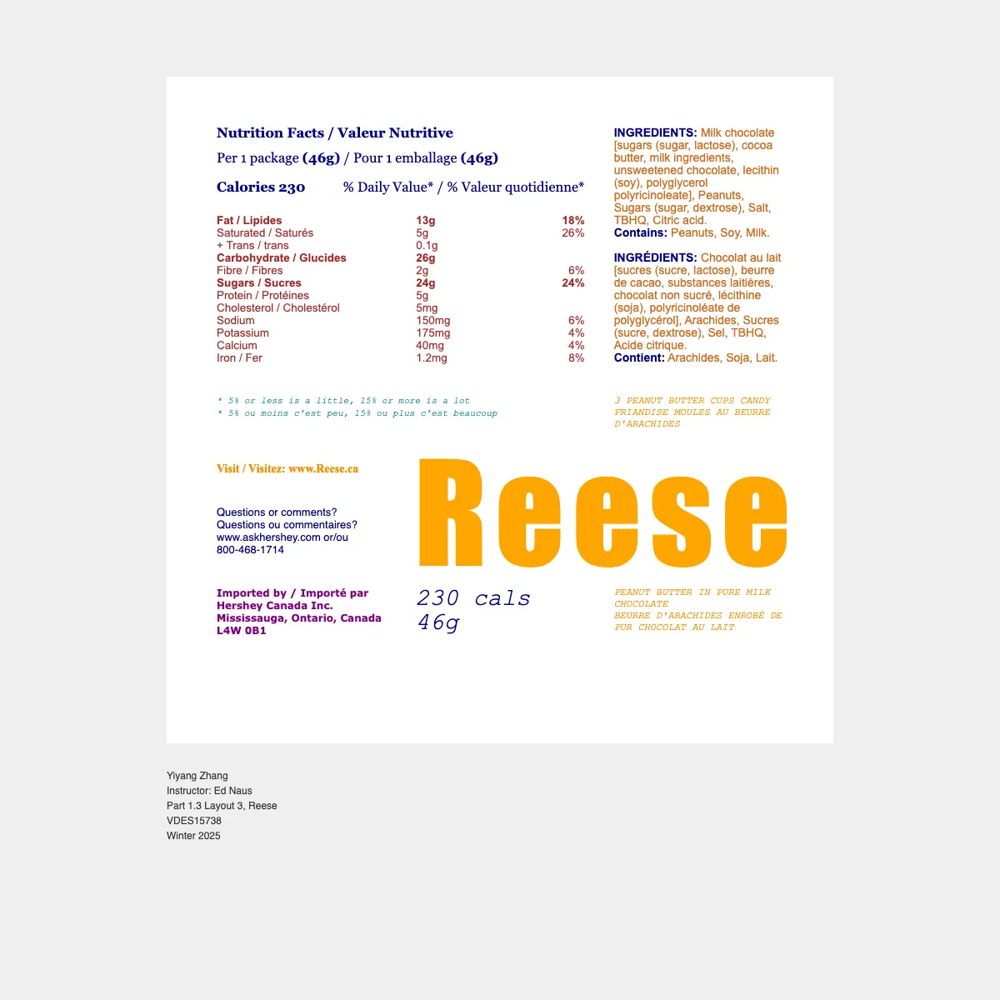
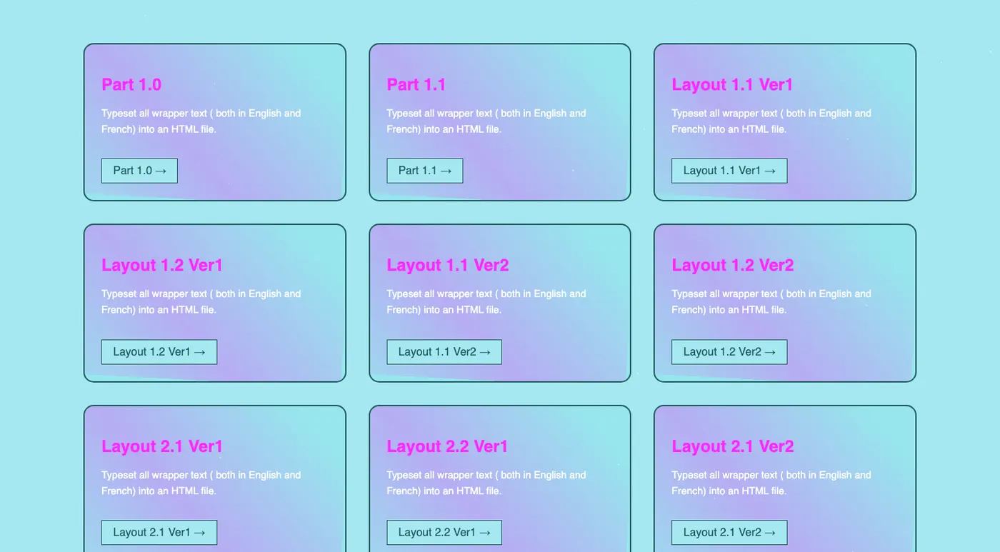
Goal目标目標目的ObjectifZiel
Research an influential typographer, write it up, and design a website that interprets their work, embedding at least one font with @font-face.
研究一位有影响力的字体设计师，写成论文，再设计一个诠释其作品的网站，并至少用 @font-face 嵌入一款字体。
研究一位有影響力的字型設計師，寫成論文，再設計一個詮釋其作品的網站，並至少用 @font-face 嵌入一款字型。
影響力のあるタイポグラファーを調べて論文にまとめ、その仕事を解釈するウェブサイトをデザインする。少なくとも 1 書体を @font-face で埋め込むこと。
Étudier un typographe influent, en faire un mémoire, puis concevoir un site qui interprète son travail en intégrant au moins une police avec @font-face.
Einen einflussreichen Typografen recherchieren, darüber schreiben und eine Website gestalten, die sein Werk interpretiert – mit mindestens einer per @font-face eingebundenen Schrift.
Approach方法方法アプローチDémarcheVorgehen
I chose Canadian type designer Rod McDonald and wrote a 1,700-word paper on his work: the revival of Carl Dair’s Cartier as Cartier Book, Laurentian for Maclean’s — Canada’s first custom magazine typeface — Gibson for the GDC, and Classic Grotesque, which refines early grotesques such as Akzidenz-Grotesk and Monotype Grotesque. The paper became the site’s content, and the site went through six variants.
我选了加拿大字体设计师 Rod McDonald，写了一篇 1,700 词的论文，梳理他的作品：把 Carl Dair 的 Cartier 复刻为 Cartier Book；为《Maclean’s》杂志设计的 Laurentian —— 加拿大第一款杂志定制字体；为加拿大平面设计师协会（GDC）设计的 Gibson；以及改良 Akzidenz-Grotesk、Monotype Grotesque 等早期怪诞体的 Classic Grotesque。论文成为网站的内容，网站前后做了六个变体。
我選了加拿大字型設計師 Rod McDonald，寫了一篇 1,700 詞的論文，梳理他的作品：把 Carl Dair 的 Cartier 復刻為 Cartier Book；為《Maclean’s》雜誌設計的 Laurentian —— 加拿大第一款雜誌定製字型；為加拿大平面設計師協會（GDC）設計的 Gibson；以及改良 Akzidenz-Grotesk、Monotype Grotesque 等早期怪誕體的 Classic Grotesque。論文成為網站的內容，網站前後做了六個變體。
カナダの書体デザイナー Rod McDonald を選び、その仕事について 1,700 語の論文を書きました。Carl Dair の Cartier を Cartier Book として復刻したこと、カナダ初の雑誌専用書体である Maclean’s 誌の Laurentian、GDC（カナダ・グラフィックデザイナー協会）のための Gibson、そして Akzidenz-Grotesk や Monotype Grotesque などの初期グロテスクを洗練させた Classic Grotesque。論文がサイトの中身になり、サイトは 6 つのバリエーションを経ました。
J’ai choisi le dessinateur de caractères canadien Rod McDonald et rédigé un mémoire de 1 700 mots sur son travail : la reprise du Cartier de Carl Dair en Cartier Book, Laurentian pour Maclean’s — le premier caractère de magazine sur mesure au Canada —, Gibson pour la GDC, et Classic Grotesque, qui affine les premières grotesques comme l’Akzidenz-Grotesk et la Monotype Grotesque. Le mémoire est devenu le contenu du site, qui a connu six variantes.
Ich habe den kanadischen Schriftgestalter Rod McDonald gewählt und eine Arbeit mit 1.700 Wörtern über sein Werk geschrieben: die Neuauflage von Carl Dairs Cartier als Cartier Book, die Laurentian für Maclean’s – die erste eigens entworfene Magazinschrift Kanadas –, die Gibson für die GDC und die Classic Grotesque, die frühe Grotesk-Schriften wie Akzidenz-Grotesk und Monotype Grotesque verfeinert. Die Arbeit wurde zum Inhalt der Website, und die Website durchlief sechs Varianten.
Key decisions关键决策關鍵決策主な判断Décisions clésWichtige Entscheidungen
- Let the subject set the voice. A slab-serif heading face and, in the last two variants, an embedded display face (Oxanium, via @font-face) contrast with a quiet sans body — echoing McDonald’s mix of historical form and modern finish.
- From a long scroll to a reading grid. V1 was a single column. Later variants moved to two columns per section, with portraits and type specimens (Laurentian Condensed Bold, Regular, Italic) set as live text beside the argument.
- Navigation that mirrors the paper. Intro, Contribution, Influence, Typeface Analysis, Classic Grotesque, References — the menu is the paper’s outline, so the site reads as a document.
- Motion with restraint. A one-second fade per section and a GSAP drop-in for the title — nothing that competes with reading.
- 让主题决定语气。粗衬线的标题字体，加上最后两个变体里通过 @font-face 嵌入的展示字体 Oxanium，与安静的无衬线正文形成对比 —— 呼应 McDonald 把历史字形与现代质感相结合的做法。
- 从长滚动到阅读网格。V1 是单栏长页。后来的变体改成每节两栏，人物照片和字体样张（Laurentian Condensed Bold、Regular、Italic）以真实文字排在论述旁边。
- 导航就是论文的提纲。简介、贡献、影响、字体分析、Classic Grotesque、参考文献 —— 菜单就是论文的目录，所以整个网站读起来像一份文献。
- 克制的动效。每节一秒的淡入，标题用 GSAP 落下 —— 没有任何与阅读抢注意力的东西。
- 讓主題決定語氣。粗襯線的標題字型，加上最後兩個變體裡透過 @font-face 嵌入的展示字型 Oxanium，與安靜的無襯線正文形成對比 —— 呼應 McDonald 把歷史字形與現代質感相結合的做法。
- 從長捲動到閱讀網格。V1 是單欄長頁。後來的變體改成每節兩欄，人物照片和字型樣張（Laurentian Condensed Bold、Regular、Italic）以真實文字排在論述旁邊。
- 導覽就是論文的提綱。簡介、貢獻、影響、字型分析、Classic Grotesque、參考文獻 —— 選單就是論文的目錄，所以整個網站讀起來像一份文獻。
- 剋制的動效。每節一秒的淡入，標題用 GSAP 落下 —— 沒有任何與閱讀搶注意力的東西。
- 題材に声を決めさせる。スラブセリフの見出しと、最後の 2 バリエーションでは @font-face で埋め込んだディスプレイ書体 Oxanium を、静かなサンセリフの本文と対比させました。歴史的な形と現代的な仕上げを組み合わせる McDonald の作風への呼応です。
- 長いスクロールから、読むためのグリッドへ。V1 は 1 段組みでした。以降のバリエーションではセクションごとに 2 段組みにし、肖像と書体見本（Laurentian Condensed Bold、Regular、Italic）を、本文の横に実際のテキストとして置きました。
- 論文をなぞるナビゲーション。Intro、Contribution、Influence、Typeface Analysis、Classic Grotesque、References。メニューが論文の章立てそのものなので、サイトが 1 つの文書として読めます。
- 控えめなモーション。セクションごとに 1 秒のフェードイン、タイトルは GSAP で上から降りてくるだけ。読むことと競うものは置きません。
- Laisser le sujet donner le ton. Une égyptienne pour les titres et, dans les deux dernières variantes, une police de titrage intégrée (Oxanium, via @font-face) contrastent avec un texte courant en linéale discrète — en écho au mélange de forme historique et de finition moderne de McDonald.
- D’un long défilement à une grille de lecture. La V1 tenait sur une seule colonne. Les variantes suivantes passent à deux colonnes par section, avec portraits et spécimens (Laurentian Condensed Bold, Regular, Italic) composés en texte réel à côté de l’argument.
- Une navigation calquée sur le mémoire. Intro, Contribution, Influence, Analyse de caractère, Classic Grotesque, Références : le menu est le plan du mémoire, et le site se lit comme un document.
- Un mouvement mesuré. Un fondu d’une seconde par section et une entrée GSAP pour le titre — rien qui concurrence la lecture.
- Das Thema bestimmt den Ton. Eine Egyptienne für die Überschriften und in den letzten beiden Varianten eine eingebundene Display-Schrift (Oxanium, per @font-face) kontrastieren mit einer ruhigen Grotesk im Fließtext – ein Echo auf McDonalds Mischung aus historischer Form und modernem Schliff.
- Vom langen Scrollen zum Leseraster. V1 war einspaltig. Spätere Varianten setzten jeden Abschnitt zweispaltig, mit Porträts und Schriftmustern (Laurentian Condensed Bold, Regular, Italic) als echtem Text neben der Argumentation.
- Eine Navigation, die der Arbeit folgt. Intro, Beitrag, Einfluss, Schriftanalyse, Classic Grotesque, Quellen – das Menü ist die Gliederung der Arbeit, sodass sich die Website wie ein Dokument liest.
- Zurückhaltende Bewegung. Eine Sekunde Einblendung pro Abschnitt und ein GSAP-Einflug für den Titel – nichts, was mit dem Lesen konkurriert.
Dead ends & cut features死胡同与砍掉的功能死胡同與砍掉的功能行き止まりと削った機能Impasses et fonctions abandonnéesSackgassen & gestrichene Ideen
- The first variant was a faithful single column: easy to read, but visually indistinguishable from the PDF. Colour bands and the two-column grid gave each section its own identity.
- 第一个变体是忠实的单栏：好读，但看起来和 PDF 没有区别。色带和两栏网格让每一节有了自己的面貌。
- 第一個變體是忠實的單欄：好讀，但看起來和 PDF 沒有區別。色帶和兩欄網格讓每一節有了自己的面貌。
- 最初のバリエーションは素直な 1 段組みで、読みやすいものの PDF と見た目が変わりませんでした。色の帯と 2 段組みのグリッドで、セクションごとの個性が生まれました。
- La première variante était une colonne unique fidèle : facile à lire, mais visuellement identique au PDF. Les bandes de couleur et la grille à deux colonnes ont donné à chaque section sa propre identité.
- Die erste Variante war eine getreue einzelne Spalte: gut lesbar, aber optisch nicht vom PDF zu unterscheiden. Farbbänder und das zweispaltige Raster gaben jedem Abschnitt eine eigene Identität.
Outcome成果成果成果RésultatErgebnis
A research paper with APA references and a six-variant website, the last of which is the final.
一篇附 APA 参考文献的研究论文，以及一个有六个变体的网站，最后一个即定稿。
一篇附 APA 參考文獻的研究論文，以及一個有六個變體的網站，最後一個即定稿。
APA 形式の参考文献付きリサーチ論文と、6 バリエーションのウェブサイト（最後が最終版）。
Un mémoire de recherche avec références APA et un site en six variantes, dont la dernière est la version finale.
Eine Recherchearbeit mit Quellen nach APA und eine Website in sechs Varianten, von denen die letzte die Endfassung ist.
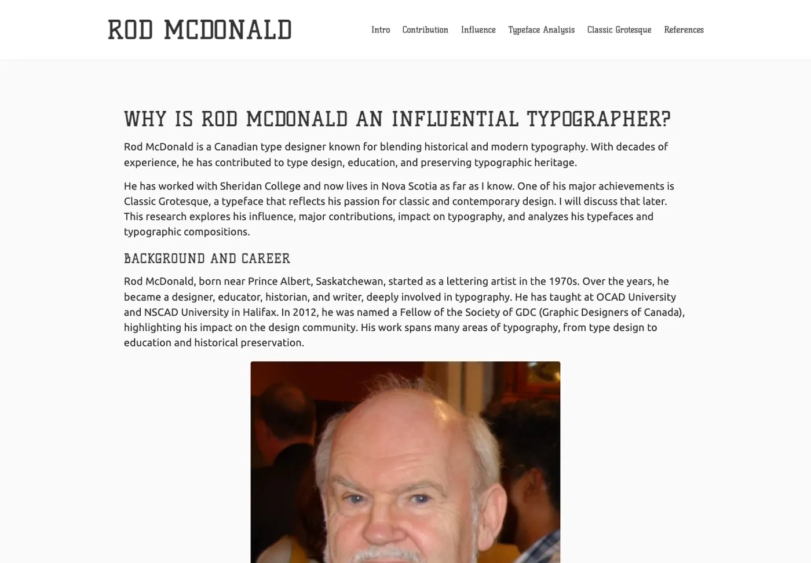
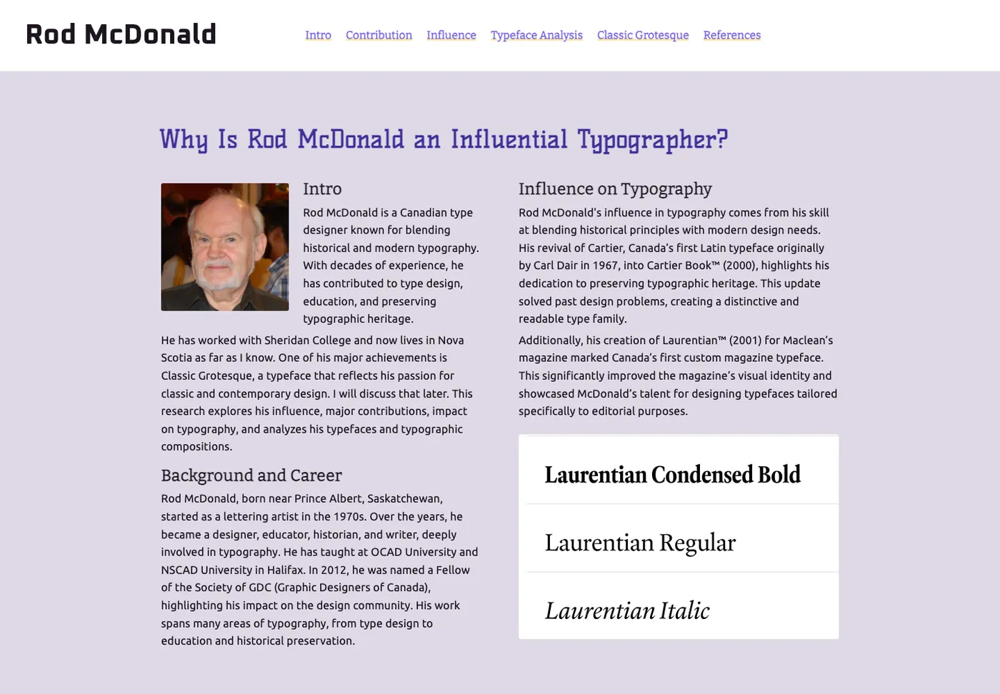
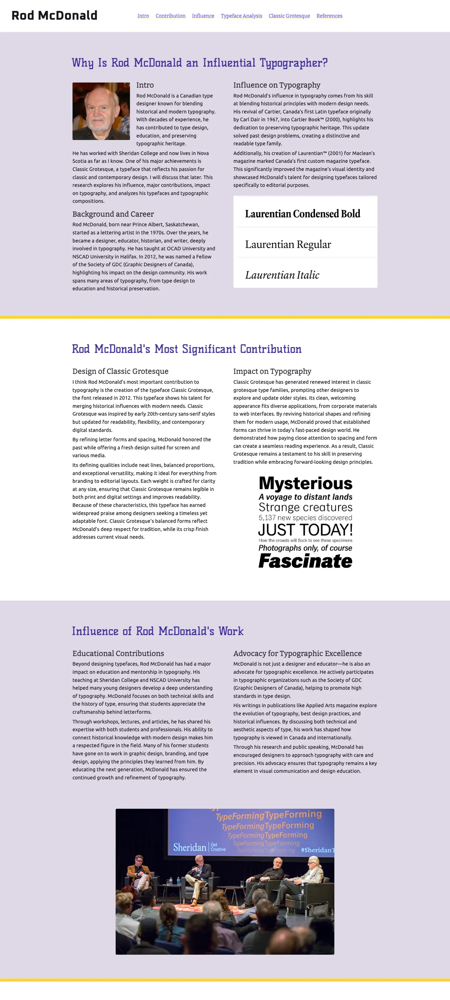
What I learned收获收穫学んだことCe que j’en retiensWas ich gelernt habe
- Constraints reveal hierarchy. With one face and one size, position and space did most of the work; weight and colour then became additions, not crutches.
- Settings are decisions. Measure, leading and tracking changed readability more than the choice of typeface did.
- Rebuild in the target medium. Print layouts only translated to the web once they were rebuilt on a real grid instead of copied pixel by pixel.
- 限制让层级现形。只有一款字体、一个字号时，位置和留白承担了大部分工作；之后字重和颜色就成了加分项，而不是拐杖。
- 参数就是决策。行长、行距和字距对可读性的影响，比选哪款字体还大。
- 在目标媒介里重建。印刷版式只有在真正的网格上重建，而不是逐像素照搬，才能成功转到网页上。
- 限制讓層級現形。只有一款字型、一個字級時，位置和留白承擔了大部分工作；之後字重和顏色就成了加分項，而不是柺杖。
- 引數就是決策。行長、行距和字距對可讀性的影響，比選哪款字型還大。
- 在目標媒介裡重建。印刷版式只有在真正的網格上重建，而不是逐畫素照搬，才能成功轉到網頁上。
- 制約が階層をあぶり出す。1 書体・1 サイズでは位置と余白がほとんどの仕事をし、ウェイトや色はその後に足すもの、頼るものではなくなりました。
- 数値は判断である。行長、行送り、字間は、書体の選択以上に読みやすさを左右しました。
- 目的の媒体で組み直す。印刷のレイアウトは、ピクセル単位で写すのではなく本物のグリッドで組み直して初めて、ウェブに移せました。
- La contrainte révèle la hiérarchie. Avec une police et un corps, la position et l’espace ont fait l’essentiel ; la graisse et la couleur sont ensuite devenues des ajouts, pas des béquilles.
- Les réglages sont des décisions. La justification, l’interlignage et l’approche ont changé la lisibilité davantage que le choix de la police.
- Reconstruire dans le support visé. Les mises en page imprimées ne sont passées au web qu’une fois reconstruites sur une vraie grille, au lieu d’être copiées pixel par pixel.
- Vorgaben machen Hierarchie sichtbar. Mit einer Schrift und einer Größe leisteten Position und Raum die meiste Arbeit; Strichstärke und Farbe wurden danach zur Ergänzung, nicht zur Krücke.
- Einstellungen sind Entscheidungen. Zeilenlänge, Zeilenabstand und Laufweite veränderten die Lesbarkeit stärker als die Wahl der Schrift.
- Im Zielmedium neu bauen. Drucklayouts ließen sich erst ins Web übertragen, als sie auf einem echten Raster neu gebaut statt Pixel für Pixel kopiert wurden.
All versions全部版本全部版本全バージョンToutes les versionsAlle Versionen
- Stroke — letterforms, paragraph & classification笔触 — 字母、段落与分类筆觸 — 字母、段落與分類ストローク — 字形・段落・分類Trait — lettres, paragraphe et classificationStrich — Buchstaben, Absatz & Klassifikation ↗
- Stroke — process (PDF)笔触 — 过程稿（PDF）筆觸 — 過程稿（PDF）ストローク — プロセス（PDF）Trait — processus (PDF)Strich — Prozess (PDF) ↗
- Hierarchy — wrapper analysis层级 — 包装分析層級 — 包裝分析ヒエラルキー — 包装の分析Hiérarchie — analyse de l’emballageHierarchie — Analyse der Verpackung ↗
- Hierarchy — bilingual transcription层级 — 双语抄录層級 — 雙語抄錄ヒエラルキー — バイリンガルの書き起こしHiérarchie — transcription bilingueHierarchie — zweisprachige Abschrift ↗
- Hierarchy — all twelve HTML layouts层级 — 全部十二个 HTML 版式層級 — 全部十二個 HTML 版式ヒエラルキー — HTML レイアウト 12 種すべてHiérarchie — les douze mises en page HTMLHierarchie — alle zwölf HTML-Layouts ↗
- Voice — variant 1语气 — 变体 1語氣 — 變體 1ボイス — バリエーション 1Voix — variante 1Stimme — Variante 1 ↗
- Voice — variant 2语气 — 变体 2語氣 — 變體 2ボイス — バリエーション 2Voix — variante 2Stimme — Variante 2 ↗
- Voice — variant 3语气 — 变体 3語氣 — 變體 3ボイス — バリエーション 3Voix — variante 3Stimme — Variante 3 ↗
- Voice — variant 4语气 — 变体 4語氣 — 變體 4ボイス — バリエーション 4Voix — variante 4Stimme — Variante 4 ↗
- Voice — variant 5语气 — 变体 5語氣 — 變體 5ボイス — バリエーション 5Voix — variante 5Stimme — Variante 5 ↗
- Voice — final语气 — 最终版語氣 — 最終版ボイス — 最終版Voix — version finaleStimme — Endfassung ↗
Credits致谢致謝クレジットCréditsCredits
Typeface history and images in Voice are cited in the paper (APA). The wrapper text belongs to Hershey Canada and is used here as study material.
“语气”中的字体史料与图片均已在论文中按 APA 格式注明出处。包装纸文字归 Hershey Canada 所有，此处仅作练习素材。
“語氣”中的字型史料與圖片均已在論文中按 APA 格式註明出處。包裝紙文字歸 Hershey Canada 所有，此處僅作練習素材。
ボイスの書体史と画像の出典は論文内に APA 形式で記載しています。包装の文字は Hershey Canada に帰属し、ここでは練習の素材として使っています。
L’histoire des caractères et les images de Voix sont citées dans le mémoire (APA). Le texte de l’emballage appartient à Hershey Canada et sert ici de matériau d’étude.
Schriftgeschichte und Bilder in „Stimme“ sind in der Arbeit nach APA belegt. Der Verpackungstext gehört Hershey Canada und dient hier als Übungsmaterial.